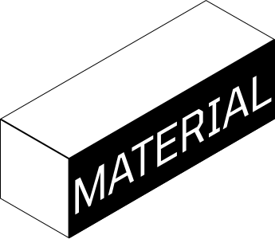
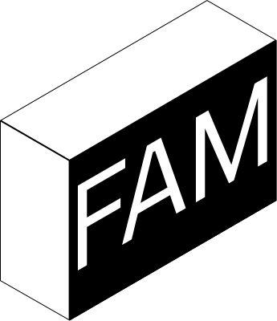
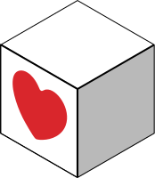
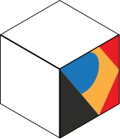
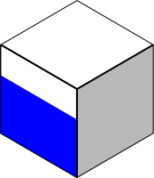
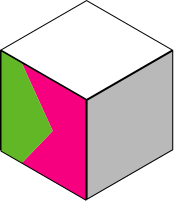
Ein Materialinitiative-Netzwerkprojekt in Südtirol.
Eine Materialinitiative unterstützt einen gesunden Materialfluss von Reststoffen in einem Territorium.
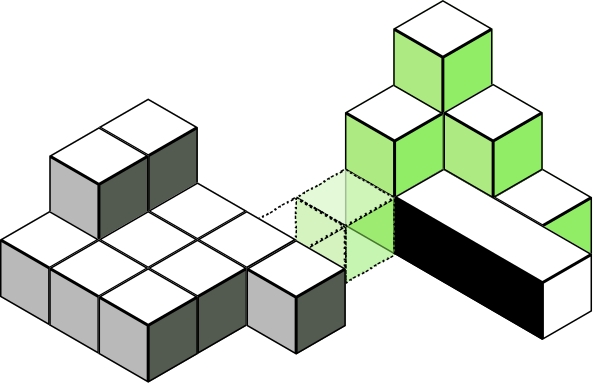
Es ist ein physischer Ort, an dem Materialien aller Art, die noch in gutem Zustand sind, gelagert und organisiert werden, um sie erneut für Wiederverwendungszwecke verfügbar zu machen.
Damit helfen sie, die Abfallproduktion zu reduzieren, Nachhaltigkeit zu fördern und die Kreislaufwirtschaft zu stärken. Kurz gesagt: den Kreislauf schließen!
Südtirol wartet nicht.
Wir können bereits drei laufende Initiativen in Bozen, Brixen und Lana zählen – und eine weitere in Schlanders.
Sie haben ein Video für euch gemacht:
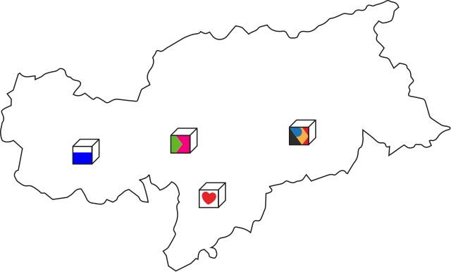
MATERIAL FAM (Filmproduktion: Alessandra Capuano, Belén Pérez, Luca Collignan, Luca Toscano)
Ein Modell das funktioniert!
In ganz Europa gibt es bereits Beispiele für erfolgreich laufende Initiativen. Einige davon findet ihr unter den folgenden Links:
- Offcut, Switzerland < www.offcut.ch >
- Remida, Italy < www.remida.org >
- CirculART, Austria < www.circulart.at >
- Initiativen für Materialkreisläufe, Germany < www.material-initiativen.org >
- Federation of recuperatheques, France < https://federation.recuperatheque.org >
Wirtschaftliche Auswirkungen – ein praktisches Beispiel:
Ein kleiner Workshop für eine Klasse von 20 Kindern, mit einem Verbrauch von 0,5 m² Sperrholz pro Kind, würde allein für das Material mehr als 500 € kosten. Diese Kosten wären vollständig vermeidbar, wenn man die täglich in der Tischlerei anfallenden Reststoffe verwenden würde.
Unser Vorschlag
Die Schaffung eines zentralisierten Raums (idealerweise in Bozen) für die Wiederverwendung in Südtirol, mit einem festen und engagierten Team, würde die Materialrückgewinnung und -verteilung im Gebiet erheblich fördern:
In dieselbe
Richtung bewegen.
Ein Hauptsitz würde das Teilen von Praktiken und Methoden ermöglichen und die Qualität der Materiallagerung und -katalogisierung sicherstellen.
Dies würde die Schaffung eines reichen und vielfältigen Programms für materialgetriebene Nachhaltigkeitserziehung ermöglichen – und gleichzeitig Möglichkeiten für Freiwilligenarbeit oder Jugendaktionsprojekte bieten.
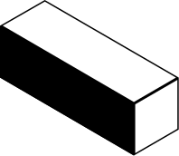
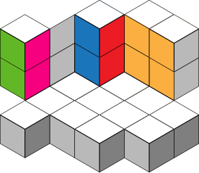
Ein Raum für Synergien.
Wir suchen eine Lagerfläche von ca. 200 m² mit Regalen, um verschiedene Materialarten zu lagern und zu verkaufen.
Grundlegend wäre die Schaffung kreativer Räume für Workshops, Gruppenaktivitäten und allgemeine Upcycling-Aktivitäten. Diese könnten beispielsweise von Kreativfachleuten und Jungdesignern in Zusammenarbeit mit der Freien Universität Bozen geleitet werden.
Ein kohärentes System.
Zahlungen, Werkzeuge, Personal und Räumlichkeiten werden denselben Grundsätzen folgen und Materialien zugänglicher und leichter verteilbar machen.
Möchten Sie mehr erfahren?
Laden Sie unser dreisprachiges Manifest herunter
Manifest herunterladen (PDF)

Die FAM (bis jetzt)
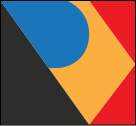
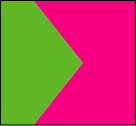
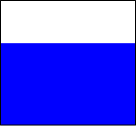